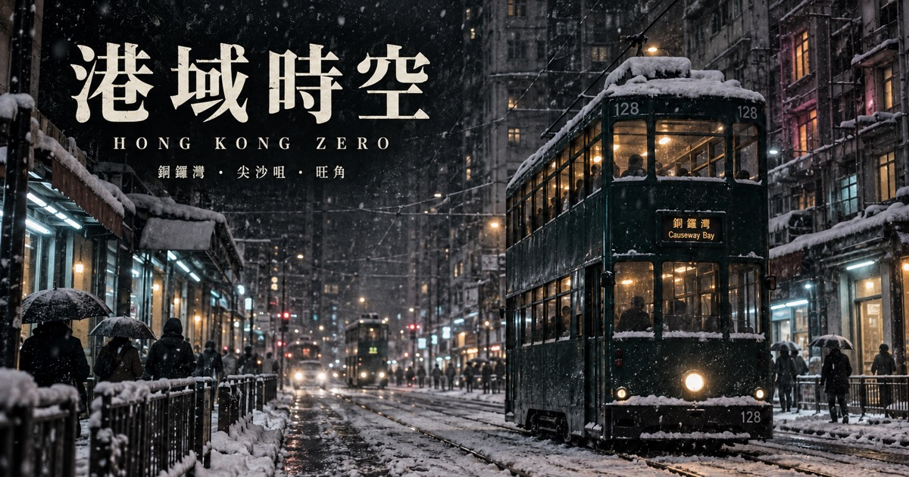

港域時空 HONG KONG ZERO
以香港實景街道為舞台的免費第一人稱動作遊戲。穿梭不同街區與時空，探索城市、完成任務。

白夜銅鑼灣 Whiteout Causewaybay
你可能從 unwire 報導認識《白夜銅鑼灣》（WHITEOUT），那款在下雪的銅鑼灣街頭遊玩的第一身射擊網頁遊戲。它現在是《港域時空》的第一個街區，原有遊戲仍可免費遊玩。從 SOGO 崇光百貨、電車軌到波斯富街與時代廣場，在暴雪與霓虹之間完成三關任務。
逆火尖沙咀 Counterfire Tsim Sha Tsui
走進鐘樓、文化中心及維港旁的尖沙咀，救出市民、截停情報攜帶者，最後突破駐守防線，擊敗「灰潮」。敵人開局已在場，無須清光護衛。
風滿彌敦道 Gale Nathan Road
第三個街區是旺角。三大賊王首度聯手，在西洋菜南街、女人街、旺角道天橋、彌敦道與朗豪坊一帶做一單大茶飯。五關任務要追回點心紙、救出人質、奪下天橋、拆除金舖門口的炸彈，最後在大電視下擊敗幕後主腦。
香港實景與創作靈感
街區以香港地政總署 CSDI 空間數據共享平台的官方三維模型為基礎，配合 OpenStreetMap 道路資料及遊戲美術修補。《白夜銅鑼灣》的雪景靈感來自電影《風林火山》中的銅鑼灣雪戰；這是獨立創作，並非電影官方遊戲。
閱讀 unwire 的《白夜銅鑼灣》報導（2026-09-15）
如何遊玩
以電腦或手機瀏覽器開啟，無需安裝。選「開始劇情」挑戰關卡，選「多人模式」與其他玩家合作或對戰（測試版），或選「探索地圖」自由探索。電腦使用滑鼠與鍵盤；手機使用畫面上的觸控操作。
進入遊戲
製作及資料來源 · 收集個人資料聲明